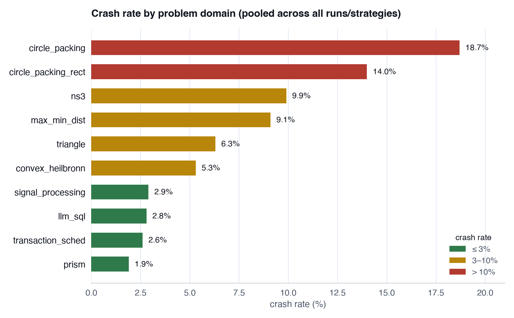
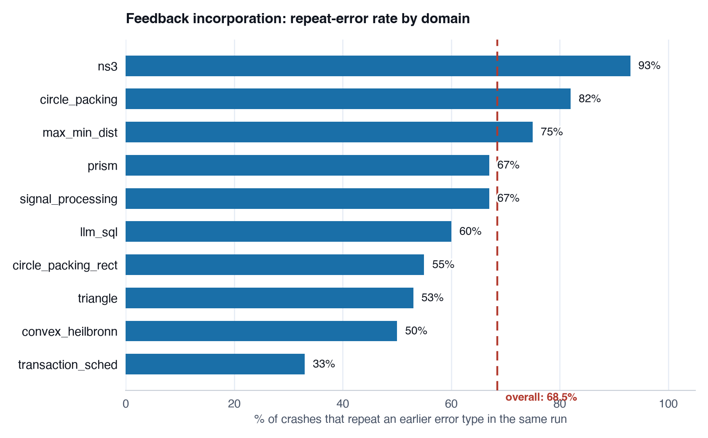
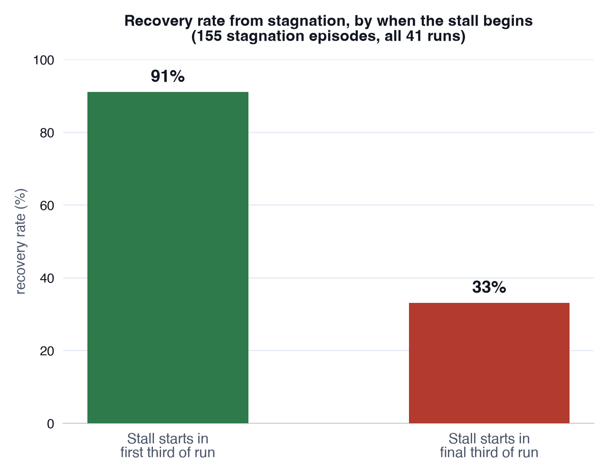

Evolutionary and agentic code search has a simple loop: a model proposes a candidate program, the program gets executed and scored, the best candidates get mutated into new candidates, and the cycle repeats. It's the engine behind systems like OpenEvolve, and it's increasingly how people try to get models to discover things — a faster sorting routine, a better packing, a tighter scheduling heuristic — that nobody explicitly programmed. The obvious question once you're relying on that loop is: how well is it actually working, and where does it break?
We mined 41 of these runs — spanning three frameworks (OpenEvolve, an in-house Evolve2, and an in-house SkyDiscover/AdaEvolve), three model families (Gemini, GPT-5, Claude), and nine problem domains — to find out. 40 of the 41 runs are evolutionary populations; one is a Claude agent directly editing a single solution with no population at all. None of the trajectories existed as clean files anywhere — they had to be reconstructed from cumulative program-checkpoint snapshots, deduplicated and sorted by discovery iteration. That reconstruction alone surfaced a duplicated run caught by MD5 checksum and a mislabeled framework caught by actually reading log module names instead of trusting folder names.
The result is 4,146 individual steps, classified one at a time. Here's what that classification looks like, and what it found.
Labeling a step
Every step in a run gets one of five labels, based on whether it executed, whether the score improved relative to its parent, and how large the edit was relative to that run's own typical edit size:
| Label | Executed? | Score change | Edit size |
|---|---|---|---|
| CRASH | no | — (no score exists) | — |
| BREAKTHROUGH | yes | improved | large |
| REFINEMENT | yes | improved | small |
| MICRO_STALL | yes | flat or worse | small |
| BIG_MISS | yes | flat or worse | large |
Two derived concepts sit on top of that: a stagnation episode is five or more consecutive steps where the run's best-ever score doesn't move, and a CDP (critical decision point) is the step immediately before a run's single largest score jump. Across all 41 runs, 343 steps crashed and 155 stagnation episodes were found.
Finding 1: crash rate is a property of the domain, not the method
Pooled across every run and strategy in a domain, crash rate ranges from 1.9% (prism) to 18.7% (circle packing) — nearly a 10x spread, on the same models and frameworks:
| Domain | Problem | Crash rate |
|---|---|---|
| circle_packing | pack circles into a container | 18.7% |
| circle_packing_rect | pack circles into a rectangle | 14.0% |
| ns3 | network-simulation optimization | 9.9% |
| max_min_dist | maximize min. pairwise point distance | 9.1% |
| triangle | equilateral-triangle point placement | 6.3% |
| convex_heilbronn | Heilbronn triangle problem, convex region | 5.3% |
| signal_processing | adaptive time-series filtering | 2.9% |
| llm_sql | DataFrame reordering for cache hit rate | 2.8% |
| transaction_sched | makespan minimization | 2.6% |
| prism | unbounded score scale (0–26.4) | 1.9% |

This matters because the two domains an earlier, narrower version of this analysis focused on — signal_processing and llm_sql — sit right near the reliable end, not the middle. Any crash-rate conclusion drawn from just those two domains was really a conclusion about two unusually well-behaved problems, not about agentic search in general.
The crashes also differ in kind by domain, not just rate. The geometry domains (circle_packing, triangle) mostly fail because the output is geometrically invalid — circles overlapping, points landing outside the triangle — not because the code itself broke. Neither of the original two domains produces that failure mode at all. A second recurring pattern showed up across domains: 12 failures from NumPy API version mismatches, where the model writes against an older NumPy API than what's actually installed (calling the removed ndarray.ptp() method is one example) — a reminder that a chunk of "the model's reasoning is wrong" failures are really "the model's world model of the library version is stale."
Finding 2: a single run's crash rate can swing 20+ points from randomness alone
This is the finding that most changes how you should read any of the other numbers here. We reran the exact same model, framework, problem, and strategy in four domains — genuine triplicates, nothing else different — and just measured how much the crash rate moved on its own.
In circle_packing, random-strategy runs ranged from 5.0% to 29.7% crash rate: a 24.8-point spread from three copies of the identical setup. max_min_dist showed a nearly identical 23.8-point spread. Put plainly: if you ran this experiment once and reported "12% crash rate," you'd have no way of knowing whether that number reflects the method or just which random seed you happened to draw. Any single-run claim anywhere in this kind of analysis has to be read against that baseline noise floor first.
One pattern in the triplicates did hold up as real signal rather than noise: the "random" parent-selection strategy was consistently less stable than "dynamic" parent selection in 3 of the 4 domains checked.
Finding 3: most crashes are avoidable — they're just repeats
68.5% of all 343 crashes are a repeat of an error category the same run already hit earlier in its own trace (up from 58.8% measured on the original, smaller sample). ns3 is the most extreme case at 92.9%. The model isn't retaining "this specific thing doesn't work" as a standing constraint within a run — it re-derives the same broken approach over and over. Roughly two out of every three crashes, in a real sense, didn't need to happen.
| Domain | Repeat-error rate |
|---|---|
| ns3 | 93% |
| circle_packing | 82% |
| max_min_dist | 75% |
| prism | 67% |
| signal_processing | 67% |
| llm_sql | 60% |
| circle_packing_rect | 55% |
| triangle | 53% |
| convex_heilbronn | 50% |
| transaction_sched | 33% |

Finding 4: stagnation is recoverable early, a trap late
Across all 155 stagnation episodes, recovery rate drops sharply depending on when in the run the stall starts: 91% of runs recover if the stall begins in the first third of the run, versus just 33% if it begins in the final third. The most extreme case in the dataset, transaction_sched_adaevolve_rerun2, gets stuck at iteration 1 and never recovers across all 96 remaining iterations. Early stagnation looks like exploration; late stagnation looks like the search has run out of room to maneuver.

Finding 5: runs get more speculative when stuck, not less
Textbook optimization intuition says a search should converge — smaller, more careful edits as it gets closer to a good solution. Most runs here do the opposite: flat-to-increasing edit size (code distance from parent) over time. When a run can't find an easy small improvement, it tends to reach for bigger, more speculative rewrites rather than settling down. That's a meaningfully different failure mode than "the search got lazy" — it's closer to "the search got desperate."
Finding 6: domain and method both shape outcomes — neither dominates alone
Breakthrough rate (the fraction of steps that are large, score-improving edits) spans 15.0% (ns3) to 36.8% (transaction_sched) across domains, with no single obvious driver — it doesn't track crash rate, and it doesn't track the domain's score scale. The clearest method-level signal shows up on the one domain where both approaches were run side by side: on signal_processing, Claude's direct-agent editing (no population, just iteratively editing one solution) improved the score on 100% of its steps, versus roughly 50% for evolutionary search on the same problem. That's a single domain, so it's a data point rather than a verdict on agentic-vs-evolutionary search in general — but it's a large enough gap to be worth someone deliberately extending.
Finding 7: the one executed reward-hacking test came back clean
The question hanging over any search that optimizes against a fixed evaluator is whether it learns to game the evaluator instead of actually solving the problem. We took a high-scoring final program — an adaptive signal-denoising filter, score 0.743 — and didn't just re-read its reported score. We actually executed the code, independently, against 5 fresh random seeds and a 10x noise-level sweep it had never been tuned on.
Performance held essentially flat: correlation between 0.977 and 0.999 across every condition tested. Defining a Hacking Score as the original score minus the independently measured score, it came back approximately zero — real evidence of generalization, not evaluator-gaming. The honest scope note: this covers exactly one program, from one run, in one domain. It's a clean result, not a broad clearance.
What's still open
A few things are deliberately marked incomplete rather than silently assumed:
- Counterfactual replay and fault-injection tests need live LLM API access that wasn't available in-session — the prep work is done, but nothing has been executed yet.
- "Leading indicators of hacking" is blocked on having a confirmed hack to characterize — the one test we ran came back clean, so there's nothing yet to build a leading indicator from.
- Several finer-grained analyses — the feedback-incorporation rate breakdown, and a comparison suggesting richer reward signals (17 metrics vs. 4) correlate with fewer unproductive big-rewrite steps — are still scoped to the original 2-domain/8-run subset and marked "not yet extended" to the full 41-run set, rather than assumed to generalize.
- A complexity-vs-reward heuristic flagged 8 suspicious steps, all in llm_sql, that on manual inspection turned out to be genuine vectorization improvements rather than hacks — a useful negative result, but not yet rerun at the full 41-run scale.
- Two domains, circle_packing and ns3, had unusually high rates of missing crash-error text, which limits how far the root-cause taxonomy can be trusted in exactly those two domains.
Why this matters beyond these nine domains
The single result I'd want anyone building or evaluating agentic search systems to sit with is the triplicate-rerun finding: a 20+ point swing in crash rate from randomness alone, in the same setup, is larger than most of the effect sizes people report when comparing methods. If you're not rerunning your comparison at least in triplicate, you can't tell your method improvement from your seed. Everything else here — the domain-dependence of failure modes, the repeat-crash rate, the late-stagnation trap — describes real structure in how these searches behave, but it's the noise-floor result that changes how much confidence to put in any of it, including in future work that extends this same analysis.